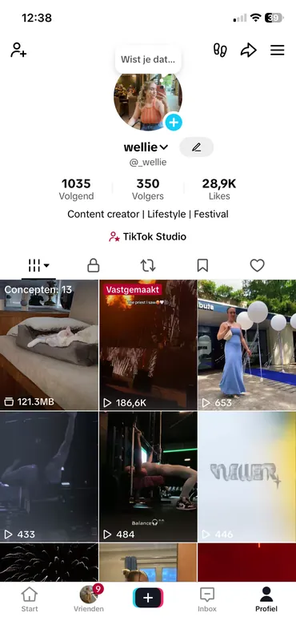
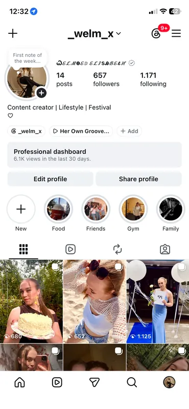

Short film
Voor het vak video van mijn opleiding Branding & Business maakte ik een korte documentaire waarin ik mijn moeder interviewde over wat we, vaak onbewust, van generatie op generatie doorgeven.
Met het interview als basis heb ik geprobeerd een persoonlijk en herkenbaar verhaal te vertellen. De focus lag op storytelling, beeld en het creëren van een intieme sfeer.


Social media
Mijn eigen kanalen
Short-form video, trends & personal content

Top video's
186,6k177,7k
26,6k1.152
86310
Personal content, lifestyle & creative work

Top content
2.42048
71222
71623